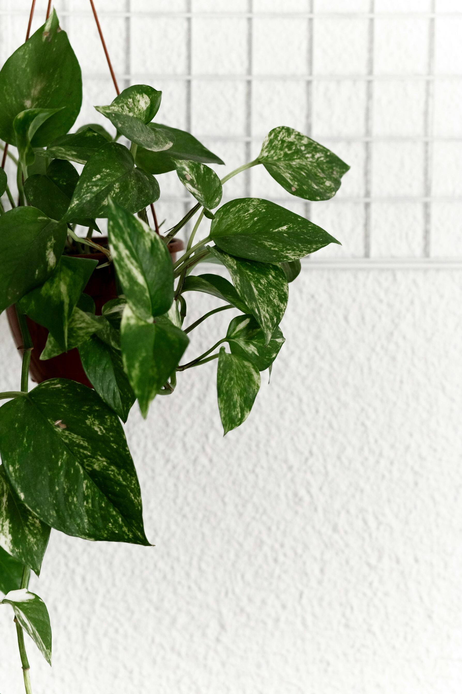

PLANTAS PARA CADA NECESIDAD
Descubre la planta ideal según luz, agua y ubicación.

Planta tropical de hojas grandes y perforadas, muy apreciada en decoración por su
apariencia exótica. Crece rápidamente en interiores con luz indirecta y humedad
moderada. Tolera riego espaciado, pero prefiere un sustrato bien drenado para evitar
encharcamientos.

Planta colgante con hojas largas y arqueadas, conocida por su resistencia y
capacidad para purificar el aire.
Se adapta bien a distintos niveles de luz y riego,
y produce pequeños retoños que pueden usarse para su propagación.
Árbol o arbusto de hojas brillantes y resistentes, muy popular en interiores por su
facilidad de adaptación. Prefiere luz indirecta brillante, riego moderado y un
ambiente estable sin corrientes de aire ni cambios bruscos de temperatura.

Es ornamental con hojas de patrones llamativos que se cierran por la noche.
Necesita alta humedad, riego frecuente y poca luz directa para evitar que sus hojas
se quemen. Es ideal para interiores, pero requiere cuidados específicos para
mantenerse saludable.
El romero es una planta aromática perenne de hojas finas y fragantes, utilizada
tanto en la cocina como en la medicina natural. Tolera bien la sequía y prefiere sol
pleno. Además, tiene propiedades antioxidantes y se cree que estimula la memoria y
la concentración.

Es una planta de interior muy resistente y fácil de cuidar, conocida por sus hojas
en
forma de corazón y su capacidad para purificar el aire. Puede crecer en agua o
tierra,
tolera poca luz y requiere riego moderado. Es una planta trepadora o colgante, ideal
para decorar interiores.

También conocida como lengua de suegra, es una planta de interior muy resistente y
de
bajo mantenimiento. Tiene hojas largas, verticales y rígidas con tonos verdes y
bordes
amarillos en algunas variedades. Tolera poca luz, requiere riego mínimo y es
excelente
para purificar el aire.
El helecho es una planta perenne sin flores ni semillas que se reproduce mediante
esporas. Se caracteriza por sus frondas verdes y delicadas, ideales para ambientes
húmedos y sombreados. Son excelentes purificadores de aire y requieren riego
frecuente.